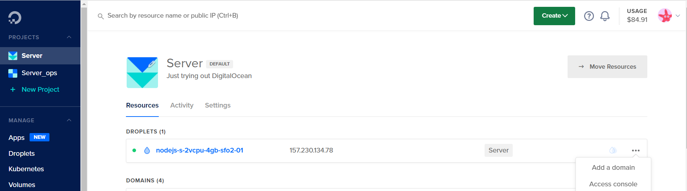
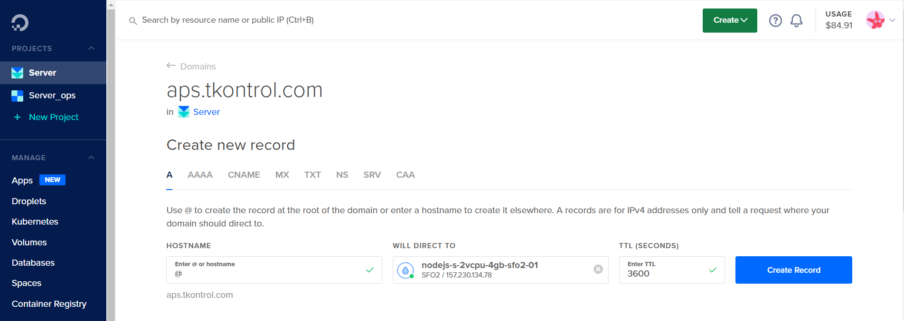
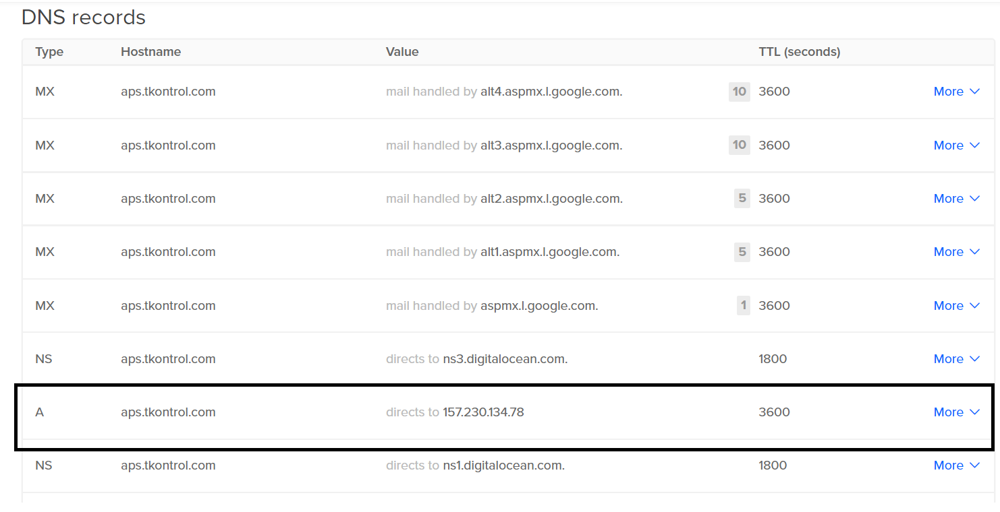
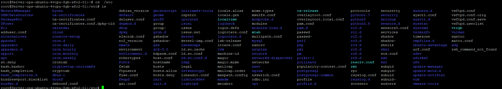

Instalaciones de programas
CONFIGURAR FIREWALL UFW
Requisitos previos
Para este programa se nesesitará lo siguiente:
- Un servidor de Ubuntu 18.04/20.04 con un non-root user sudo, que se puede configurar con el siguiente tutorial: Configuracion inicial para servidores Ubuntu 18.4/20.04
Paso 1: Instalar firewall
UFW ya viene instalado en el sistema operativo de ubuntu, si se desinstalo por alguna razón, se puede volver a instalar ejecutando el siguiente comando
sudo apt install ufw2
Paso 2: Utilizar IPv6 con UFW (opcional)
Si se desea, se puede activar IPv6; compruebe que que IPv6 este habilitado de modo que pueda administrar las reglas, para ello vamos a ocupar el editor nano o su editor favorito, ejecutamos el siguiente comando.
sudo nano /etc/default/ufw
A continuación, asegúrese de que el valor de IPV6 sea yes. La Salida debería tener el siguiente aspecto:
IPV6=yes
Guarde (Ctrl+s) y cierre el archivo (Ctrl+z). Cuando UFW esté habilitado, se configurará para escribir reglas de firewall de IPv4 y IPv6. Sin embargo, antes de habilitar UFW, nos convendrá comprobar que su firewall esté configurado para que pueda conectarse a través de SSH. Empezaremos con la configuración de las políticas predeterminadas.
Paso 3: Configurar políticas predeterminadas
Estas reglas controlan la administración del tráfico que no coincida de forma explícita con otras reglas. Por defecto, UFW está configurado para denegar todas las conexiones entrantes y permitir todas las conexiones salientes. Esto significa que quien intente llegar a su servidor no podrá conectarse, mientras que cualquier aplicación dentro del servidor podría llegar al mundo exterior.
podemos restablecer los valores predeterminado de las reglas de UFW, ejecutando los siguentes comando
sudo ufw default deny incoming
sudo ufw default allow outgoing
Atención
Establecen los valores predeterminados para denegar las conexiones entrantes y permitir las salientes. Con solo estos valores predeterminados de firewall podría bastar para una computadora personal, pero normalmente los servidores deben responder a las solicitudes de usuarios externos
Paso 4: Habilitar conexiones SSH
Si habilitamos nuestro firewall de UFW ahora, denegaría todas las conexiones entrantes. Esto significa que deberemos crear reglas que permitan explícitamente las conexiones entrantes legítimas (SSH o HTTP, por ejemplo) si queremos que nuestro servidor responda a estos tipos de solicitudes. Si utiliza un servidor en nube, probablemente le convenga permitir las conexiones SSH entrantes para poder conectarse y administrar su servidor.
Para configurar el servidor de modo que permita conexiones entrante, se debe de ejecutar el siguiente comando.
sudo ufw allow ssh
Esto creará reglas de firewall que permitirán todas las conexiones en el puerto 22, que es el que escucha el demonio SSH por defecto. UFW registra el significado del puerto allow ssh porque está enumerado como servicio en el archivo /etc/services.
Ahora que su firewall está configurado para permitir las conexiones SSH entrantes, podemos habilitarlo.
Paso 5: Habilitar UFW
Vamos habilitar UFW, para hacer esto vamos a ejecutar el siguiente comando:
sudo ufw enable
Atención
Recibirá una advertencia que indicará que el comando puede interrumpir las conexiones SSH existentes. Ya configuramos una regla de firewall que permite conexiones SSH. Debería ser posible continuar sin inconvenientes. Responda a la solicitud con y y presione ENTER.
Con esto, el firewall quedará activo. Ejecute el comando:
sudo ufw status verbose
Paso 6: Habilitar otras conexiones
Puertos importantes
en UFW se pueden habilitar otros puertos para establecer conexión, vamos habilitar el puerto 80 que es donde se conectan las aplicaciones web y en fundamental tenerlo habilitado
- HTTP en el puerto 80, que es lo que utilizan los servidores web no cifrados, ejecute el siguiente comando:
sudo ufw allow 80 - HTTPS en el puerto 443, que es lo que utilizan los servidores web cifrados, ejeute el siguiente comando:
sudo ufw allow 443
Intervalos de puerto específicos
Puede especificar intervalos de puerto con UFW. Algunas aplicaciones utilizan varios puertos en vez de uno solo. Ejemplo de uso de habilitación de puertos por intervalo es como se muestra en el siguiente comando.
sudo ufw allow 6000:6007/tcp
Cuando se especifiquen intervalos de puerto con UFW, debe especificar el protocolo (tcp o udp) a los que deberían aplicarse las reglas. No lo mencionamos antes porque cuando no se especifica el protocolo se permiten ambos de forma automática, lo cual está bien en la mayoría de los casos.
Direcciones IP específicas
Al trabajar con UFW, también puede especificar direcciones IP. Por ejemplo, si desea permitir las conexiones desde una dirección IP específica, como una dirección IP de trabajo o doméstica 203.0.113.4, debe especificar from y luego la dirección IP:
sudo ufw allow from 203.0.113.4
También puede especificar un puerto concreto al que la dirección IP pueda conectarse agregando to any port seguido del número de este. Por ejemplo, si desea permitir que 203.0.113.4 se conecte al puerto 22 (SSH), utilice este comando:
sudo ufw allow from 203.0.113.4 to any port 22
Paso 7: Denegar conexiones
Si no ha cambiado la política predeterminada para las conexiones entrantes, UFW está configurado para denegarlas todas. Generalmente, esto simplifica el proceso de creación de una política de firewall segura al exigirle crear reglas que permitan de forma explícita el acceso de puertos específicos y direcciones IP.
Sin embargo, a veces le convendrá denegar conexiones específicas basadas en la dirección IP o subred de origen, quizás por saber que su servidor recibe ataques desde ellas. Además, si desea cambiar su política entrante predeterminada para allow (no lo recomendamos), debería crear reglas deny para cualquier servicio o dirección IP cuyas conexiones no desee permitir.
Para escribir reglas de deny, puede utilizar los comandos descritos anteriormente y sustituir allow por deny.
Por ejemplo, para denegar conexiones HTTP, podría utilizar este comando:
sudo ufw deny http
A su vez, si desea denegar todas las conexiones de 203.0.113.4 podría utilizar este comando:
sudo ufw deny from 203.0.113.4
Paso 8: Eliminar reglas
Existen dos maneras diferentes de especificar las reglas que se eliminarán: por número de regla o por regla real (se asemejan a la forma en que las reglas se especifican al crearse). Comenzaremos con el método de eliminación por el número de regla porque es más sencillo.
Por número de regla
Si utiliza el número de regla para eliminar reglas de firewall, lo primero que le convendrá hacer es obtener una lista de reglas de firewall. El comando “UFW status” tiene una opción para mostrar números junto a cada regla, como se muestra aquí:
sudo ufw status numbered
Status: active
To Action From
-- ------ ----
[ 1] 22 ALLOW IN 15.15.15.0/24
[ 2] 80 ALLOW IN Anywhere
Si decidimos eliminar la regla 2, que permite las conexiones del puerto 80 (HTTP), podemos especificarlo en un comando “UFW delete”como este:
sudo ufw delete 2
Por regla real
La alternativa a números de regla es especificar la regla real que se eliminará. Por ejemplo, si desea eliminar la regla allow http, podría escribir lo siguiente:
sudo ufw delete allow http
También podría especificar la regla mediante allow 80 en vez de hacerlo por nombre de servicio:
sudo ufw delete allow 80
Este método eliminará las reglas IPv4 y IPv6, si existen.
Paso 9: Comprobar el estado y las reglas de UFW
En cualquier momento, puede verificar el estado de UFW con este comando:
sudo ufw status verbose
Status: inactive
Si UFW esta activado deberia de ver una salida similar a la siguiente:
Status: active
Logging: on (low)
Default: deny (incoming), allow (outgoing), disabled (routed)
New profiles: skip
To Action From
-- ------ ----
22/tcp ALLOW IN Anywhere
el siguiente comando sirve para ver el estado y configuracion de UFW
sudo ufw status
Paso 10: Deshabilitar o reiniciar UFW (opcional)
Si decide que no desea utilizar UFW, puede desactivarlo con este comando:
sudo ufw disable
Si ya tiene reglas de UFW configuradas y decide que desea empezar de nuevo, puede utilizar el comando “reset”:
sudo ufw reset
Esto desactivará UFW y eliminará cualquier regla definida anteriormente. Tenga en cuenta que los ajustes originales de las políticas predeterminadas no se restablecerán si las modificó en algún momento. Esto debería permitirle empezar de nuevo con UFW.
INSTALAR MySQL
Requisito previos
Para la instalación del servidor de MySQL se nesesitará lo siguiente:
- Un servidor Ubuntu 18.04/20.04 configurado siguiendo esta guía de configuración inicial para servidores ubuntu 18.04/20.04, incluyendo un usuario
no rootcon privilegios desudoy unfirewall.
Paso 1: Instalar MyQSL
Instalar el indice del paquete en el servidor, ejecutando el siguiente comando:
sudo apt update
Despues instalaremos el paquete determinado.
sudo apt install mysql-server
Con este comando se instalará el servidor MySQL
Nota
Con esta instalación no le pedirá que cree una contraseña ni que realice otro cambios de configuración, deje todo por defecto, posteriormente se modificará algunos archivos de configuración.
Paso 2: Configurar MySQL
Ejecutaremos el siguiente comando de seguridad:
sudo mysql_secure_installation
Esto hará que pase por una serie de indicaciones en las que puede hacer algunos cambios en las opciones de seguridad de su instalación de MySQL.
- La primera indicación le preguntará si quiere configurar el plugin de Validación de Contraseña, la que puede usarse para probar la solidez de su contraseña de MySQL.
- Independientemente de lo que haya seleccionado, la siguiente indicación será establecer una contraseña para el usuario root de MySQL. Ingrese y luego confirme una contraseña segura de su elección.
- Desde este punto, puede presionar
Yy luegoENTERpara aceptar las configuraciones predeterminadas para todas las preguntas siguientes. Esto eliminará algunos usuarios anónimos y la base de datos de prueba, deshabilitará los inicios de sesión root remotos y cargará estas nuevas reglas para que MySQL respete los cambios que haya realizado inmediatamente.
Para iniciar el directorio de datos de MySQL, debe usar mysql_install_db para versiones anteriores a 5.7.6, y mysqld --initialize para la versión5.7.6 y posteriores. Si trata de ejecutar el comando igual, se le mostrará el siguiente error:
mysqld: Can't create directory '/var/lib/mysql/' (Errcode: 17 - File exists)
. . .
2018-04-23T13:48:00.572066Z 0 [ERROR] Aborting
Aunque se haya establecido una contraseña para el usuario root de MySQL, este no esta configurado para autenticarse con una contraseña al conectarse al shell de MySQL.
Paso 3: Ajustar la autenticación y privilegio de usuario
Para los sistemas Ubuntu que estén usando MySQL 5.7 (y las versiones posteriores), el usuario root de MySQL está configurado, de forma predeterminada, para autenticarse usando el plugin auth_socket en vez de una contraseña. En muchos casos, esto permite que la seguridad y usabilidad sea mayor pero también puede complicar las cosas cuando deba permitir que un programa externo (tal como phpMyAdmin) tenga acceso al usuario.
Deberá cambiar su método de autenticación de auth_socket a mysql_native_password para usar una contraseña para conectarse a MySQL como root. Para hacerlo, abra la indicación de MySQL desde su terminal:
sudo mysql
Posteriormente, consulte cuál método de autenticación usa cada una de sus cuentas de usuario de MySQL usando el siguiente comando:
SELECT user,authentication_string,plugin,host FROM mysql.user;
La salida seria de la siguiente manera:
mysql> SELECT user,authentication_string,plugin,host FROM mysql.user;
+------------------+-------------------------------------------+-----------------------+-----------+
| user | authentication_string | plugin | host |
+------------------+-------------------------------------------+-----------------------+-----------+
| root | | auth_socket | localhost |
| mysql.session | *THISISNOTAVALIDPASSWORDTHATCANBEUSEDHERE | mysql_native_password | localhost |
| mysql.sys | *THISISNOTAVALIDPASSWORDTHATCANBEUSEDHERE | mysql_native_password | localhost |
| debian-sys-maint | *CC744277A401A7D25BE1CA89AFF17BF607F876FF | mysql_native_password | localhost |
+------------------+-------------------------------------------+-----------------------+-----------+
4 rows in set (0.00 sec)
Se puede ver que root está con el plugin auth_socket
Atención
Para configurar la cuenta root para autenticarse usando una contraseña, ejecute el siguiente comando ALTER USER. Asegúrese de cambiar password (contraseña) a una contraseña segura de su elección y sepa que este comando cambiará la contraseña de root que estableció en el Paso 2:
ALTER USER 'root'@'localhost' IDENTIFIED WITH mysql_native_password BY 'password';
FLUSH PRIVILEGES;
Volvemos a verificar la autenticación del usuario root
SELECT user,authentication_string,plugin,host FROM mysql.user;
Su salida debe de ser como se muestra a continuación
mysql> SELECT user,authentication_string,plugin,host FROM mysql.user;
+------------------+-------------------------------------------+-----------------------+-----------+
| user | authentication_string | plugin | host |
+------------------+-------------------------------------------+-----------------------+-----------+
| root | | mysql_native_password | localhost |
| mysql.session | *THISISNOTAVALIDPASSWORDTHATCANBEUSEDHERE | mysql_native_password | localhost |
| mysql.sys | *THISISNOTAVALIDPASSWORDTHATCANBEUSEDHERE | mysql_native_password | localhost |
| debian-sys-maint | *CC744277A401A7D25BE1CA89AFF17BF607F876FF | mysql_native_password | localhost |
+------------------+-------------------------------------------+-----------------------+-----------+
4 rows in set (0.00 sec)
Una vez que confirme esto en su propio servidor, puede salir del shell de MySQL:
exit
Crear nuevo usuario
Alternativamente, para otras personas puede adaptarse mejor a su flujo de trabajo si se conectan a MySQL con un usuario dedicado. Para crear tal usuario, vuelva a abrir el shell de MySQL nuevamente:
Nota
Si tiene la autenticación de contraseña habilitada para root según se describió en los párrafos de arriba, deberá usar un comando diferente para acceder al shell de MySQL. Lo que se indica a continuación ejecutará su cliente MySQL con privilegios de usuario regular, y solamente tendrá privilegios de administrador dentro de la base de datos una vez que haga la autenticación:
mysql -u root -p
Apartir de aqui vamos a crear el nuevo usuario
CREATE USER 'nombre_de_usuario'@'localhost' IDENTIFIED BY 'contraseña';
Ahora vamos a darle los privilegios adecuados para conceder persmiso de las tablas de una base de datos, así como autoridad para agregar, cambiar y eliminar privilegios de usuario, mediante este comando:
GRANT ALL PRIVILEGES ON *.* TO 'nombre_de_usuario'@'localhost' WITH GRANT OPTION;
Note que, en este punto, no necesita volver a ejecutar el comando FLUSH PRIVILEGES. Solamente necesita este comando al modificar las tablas grant utilizando declaraciones como INSERT, UPDATE o DELETE. Dado a que creó un usuario nuevo en vez de modificar uno existente, no es necesario que use FLUSH PRIVILEGES aquí.
Salimos del shell de MySQL
exit
Paso 4: Probar MySQL
Para ver el estado del servidor de MySQL podemos utilizar el siguiente comando
systemctl status mysql.service
La Salida debe ser similar a la siguiente:
mysql.service - MySQL Community Server
Loaded: loaded (/lib/systemd/system/mysql.service; enabled; vendor preset: en
Active: active (running) since Wed 2018-04-23 21:21:25 UTC; 30min ago
Main PID: 3754 (mysqld)
Tasks: 28
Memory: 142.3M
CPU: 1.994s
CGroup: /system.slice/mysql.service
└─3754 /usr/sbin/mysqld
Si MySQL no se está ejecutando se puede utilizar el siguiente comando:
sudo systemctl start mysql
Versión MySQL
Versión servidor #1
La versión de Servidor de MyQSL instalado en el Droplets (Servidor #1) es la 5.7.35
Versión servidor #2
La versión de Servidor de MyQSL instalado en el Droplets (Servidor #2) es la 8.0.22
ACCESO REMOTO POR MySQL
En los siguientes pasos se configurará a MySQL para establecer conexiones remota, ya que la configuración que se realizó en el tema anterior de Instalar MySQL solo está configurada para escuchar conexiones locales. Esta es la configuración predeterminada de MySQL, pero no funcionará para una configuración de base de datos remota, ya que MySQL debe poder escuchar una dirección IP externa donde se pueda acceder al servidor. Para habilitar esto, abra su mysqld.cnfarchivo:
Paso 1: Abrir el archivo de configuración
sudo nano /etc/mysql/mysql.conf.d/mysqld.cnf
Navegar hasta la linea que comienza con bind-address directiva:
. . .
lc-messages-dir = /usr/share/mysql
skip-external-locking
#
# Instead of skip-networking the default is now to listen only on
# localhost which is more compatible and is not less secure.
bind-address = 127.0.0.1
. . .
De forma predeterminada, este valor se establece en 127.0.0.1, lo que significa que el servidor solo buscará conexiones locales. Se deberá cambiar esta directiva para hacer referencia a una dirección IP externa. Para cambiar la directiva a una dirección IP se usará comodín, ya sea *, :: o 0.0.0.0, Adicional a ello vamos a comentar otra linea para que se pueda acceder de forma remota, la linea a comentar con un comodin será la siguiente skip-external-locking
. . .
lc-messages-dir = /usr/share/mysql
# skip-external-locking
#
# Instead of skip-networking the default is now to listen only on
# localhost which is more compatible and is not less secure.
bind-address = 0.0.0.0
. . .
Despues de cambiar esa linea se procederá a guardar los cambios (Ctrl + s) y cerrar (Ctrl + x).
Paso 2: Reiniciar el servidor
Luego se reiniciará el servicio MySQL para poner mysqld.cnfen vigencia los cambios que se realizó:
sudo systemctl restart mysql
Paso 3: Configurar usuario remoto
Para conectarse a la base de datos desde un HOST remoto, se deberá configurar una cuenta o un usuario para que aceptes las conexiones fuera de localhost para ello vamos a iniciar sesión desde la terminal de ubuntu
mysql -u root -p
Para cambiar el host de un usuario, se puede usar el RENAME USER comando de MySQL . Ejecute el siguiente comando, asegurándose de cambiar nombre_usuario el nombre de su cuenta de usuario de MySQL y remote_server_ip la dirección IP de su servidor remoto:
RENAME USER 'nombre_usuario'@'localhost' TO 'nombre_usuario'@'remote_server_ip';
Alternativamente, se puede crear una nueva cuenta de usuario que solo se conectará desde el host remoto con el siguiente comando:
CREATE USER 'nombre_usuario'@'remote_server_ip' IDENTIFIED BY 'password';
Nota
Este comando creará un usuario que se autentica con el plugin de autenticación por defecto de MySQL, caching_sha2_password. Sin embargo, existe un problema conocido con algunas versiones de PHP que puede causar problemas con este complemento.
Si se planea usar esta base de datos con una aplicación PHP, phpMyAdmin, por ejemplo, es posible que desee crear un usuario remoto que se autentique con el mysql_native_password complemento más antiguo, aunque aún seguro, en su lugar:
CREATE USER 'nombre_usuario'@'remote_server_ip' IDENTIFIED WITH mysql_native_password BY 'password';
caching_sha2_plugin y luego ALTERmás tarde con este comando:
ALTER USER 'nombre_usuario'@'remote_server_ip' IDENTIFIED WITH mysql_native_password BY 'password';
Paso 4: Conceder permisos a un usuario
se puede conceder varios privilegios y restricciones al nuevo usuario creado con el fin de garantizar la seguridad de sus acciones. . El siguiente ejemplo se concede a un usuario privilegios globales a CREATE, ALTER y DROP bases de datos, tablas y usuarios, así como el poder de INSERT, UPDATE y DELETE datos de cualquier tabla en el servidor. También le otorga al usuario la capacidad de consultar datos SELECT, crear claves externas con la REFERENCES palabra clave y realizar FLUSH operaciones con el RELOAD privilegio.
Este comando aplica para conectarse de forma remota para una ip específica
GRANT CREATE, ALTER, DROP, INSERT, UPDATE, DELETE, SELECT, REFERENCES, RELOAD on *.* TO 'nombre_usuario'@'remote_server_ip' WITH GRANT OPTION;
tambien se puede conceder permisos de esta otra forma (para este ejemplo se lo aplicaremos al usuario remote),
este comando aplica para conectarse desde cualquier IP que intente establcer conexión de forma remota.
GRANT ALL PRIVILEGES ON *.* TO 'remote'@'%' WITH GRANT OPTION;
Después de esto, es una buena práctica ejecutar el FLUSH PRIVILEGES comando. Esto liberará cualquier memoria que el servidor haya almacenado en caché como resultado de las declaraciones CREATE USER y anteriores GRANT:
FLUSH PRIVILEGES;
Luego salimos del cliente de MySQL
exit;
Se puede ejecutar el siguiente comando para acceder de forma remota a la base de datos.
mysql -u user -h database_server_ip -p
INSTALAR SERVIDOR WEB NGINX
Requisito previos
Para la instalación del servidor de web se nesesitará lo siguiente:
- Un servidor Ubuntu 18.04/20.04 configurado siguiendo esta guía de configuración inicial para servidores ubuntu 18.04/20.04, incluyendo un usuario
no rootcon privilegios desudo.
Paso 1: Instalar NGINX
Nginx ya se encuentra en los repositorio predeterminado de ubuntu podemos ejecutar el siguiente comando para instalarlo
sudo apt update
sudo apt install nginx
Tras aceptar el procedimiento, apt instalará Nginx y cualquier dependencia necesaria en su servidor.
Paso 2: Aplicar ajuste de firewall
Se debe de aplicar unos ajustes al software de firewall para permitir acceso a nginx, enumeremos las configuraciones de firewall ejecutando el siguiente comando
sudo ufw app list
La salida debe ser similar a la siguiente.
Available applications:
Nginx Full
Nginx HTTP
Nginx HTTPS
OpenSSH
Como se muestra en el resultado, hay tres perfiles disponibles para Nginx:
- Nginx Full: este perfil abre el puerto 80 (tráfico web normal, no cifrado) y el puerto 443 (tráfico TLS/SSL cifrado)
- Nginx HTTP: este perfil abre solo el puerto 80 (tráfico web normal, no cifrado)
- Nginx HTTPS: este perfil abre solo el puerto 443 (tráfico TLS/SSL cifrado)
Para habilitar un perfil se debe de escribir el siguiente comando.
sudo ufw allow 'Nginx HTTP'
Verificamos si la regla esta creada
sudo ufw status
La salida debe ser como la siguiente:
Status: active
To Action From
-- ------ ----
OpenSSH ALLOW Anywhere
Nginx HTTP ALLOW Anywhere
OpenSSH (v6) ALLOW Anywhere (v6)
Nginx HTTP (v6) ALLOW Anywhere (v6)
Paso 3: Comprobar el servidor web
Realice una verificación con systemd init para asegurarse de que el servicio esté en ejecución escribiendo lo siguiente:
systemctl status nginx
La salida debe ser similar a la siguiente:
nginx.service - A high performance web server and a reverse proxy server
Loaded: loaded (/lib/systemd/system/nginx.service; enabled; vendor preset: enabled)
Active: active (running) since Fri 2020-04-20 16:08:19 UTC; 3 days ago
Docs: man:nginx(8)
Main PID: 2369 (nginx)
Tasks: 2 (limit: 1153)
Memory: 3.5M
CGroup: /system.slice/nginx.service
├─2369 nginx: master process /usr/sbin/nginx -g daemon on; master_process on;
└─2380 nginx: worker process
Si todo se ha ejecutado con exito podemos probar nuestro servidor web en el navegador, escribiendo lo siguiente:
http://su_servidor_ip
si aparece un mensaje de Welcome to nginx! significa que el servidor web esta instalado correctamente.
Paso 4: Configurar bloques de servidores
Utilizaremos bloques de servidor (similares a host virtuales de Apache). para encapsular los detalles de la configuración y alojar más de un dominio desde un único servidor. Configuraremos un dominio llamado aps.tkontrol.com.
el proyecto web está en la siguiente dirección:
cd /var/www/html
Una vez estando dentro de ese directorio descargamos la aplicación web de APS TKONTROL MONITOREO que esta en el repositorio de GitHub, su directorio se llama dist y la ruta absoluta que vamos a ocupar para apuntar en el servidor web es la siguiente:
/var/www/html/dist
Vamos a crear unos bloques de servidores para el funcionamiento correcto de la aplicaciones que se desplegan en la plataforma https://aps.tkontrol.com, abriremos el archivo deafult y lo modificaremos, utilizamos el siguiente comando.
sudo nano /etc/nginx/sites-available/default
El siguiente bloque de configuración, es un ejemplo básico de la estructura que debe de tener.
server {
listen 80;
listen [::]:80;
root /var/www/html/dist;
index index.html index.htm index.nginx-debian.html index.php;
server_name aps.tkontrol.com;
location / {
try_files $uri $uri/ =404;
}
}
Importante
La salida anterior es un ejemplo default que trae el bloque de servidor, los bloques de servidores modificados se encuentran mas adelante detallado correctamente.
Si no hay problemas, reinicie Nginx para habilitar los cambios:
sudo systemctl restart nginx
verificamos que cargue la aplicación el servidor web NGINX digitando la siguiente url en el navegador.
http://aps.tkontrol.com
paso 5: Familiarizarse con archivos y directorios importantes
Ahora que sabe administrar el propio servicio de Nginx, debería tomarse unos minutos para familiarizarse con algunos directorios y archivos importantes.
Descripción de atributos
listen: el puerto que abrirá para las conexionesroot: directorio del proyecto, se debe de utilizar rutas absolutas para hacer esta referenciaserver_name: en este atributo va el nombre del dominio en nuestro caso tenemos el dominio aps.tkontrol.comlocation: se ocupara para realizar proxy inversos
Contenido
/var/www/html: el contenido web real, que por defecto solo consta de la página predeterminada de Nginx que vio antes, se presenta desde el directorio /var/www/html. Esto se puede cambiar modificando los archivos de configuración de Nginx.
Configuración del servidor
/etc/nginx: directorio de configuración de Nginx. En él se encuentran todos los archivos de configuración de Nginx./etc/nginx/nginx.conf: archivo de configuración principal de Nginx. Esto se puede modificar para realizar cambios en la configuración general de Nginx./etc/nginx/sites-available/: directorio en el que se pueden guardar bloques de servidor por sitio. Nginx no utilizará los archivos de configuración de este directorio a menos que estén vinculados al directorio sites-enabled. Normalmente, toda la configuración del bloque de servidor se realiza en este directorio y luego se habilita estableciendo un vínculo con el otro directorio./etc/nginx/sites-enabled/: directorio en el que se almacenan los bloques de servidor habilitados por sitio. Normalmente, estos se crean estableciendo vínculos con los archivos de configuración del directorio sites-available./etc/nginx/snippets: este directorio contiene fragmentos de configuración que pueden incluirse en otras partes de la configuración de Nginx. Los segmentos de configuración potencialmente repetibles reúnen las condiciones para la conversión a fragmentos.
Registros del servidor
/var/log/nginx/access.log: cada solicitud a su servidor web se registra en este archivo de registro, a menos que Nginx esté configurado para hacer algo diferente.
Paso 6: Archivos de configuración de nginx
A continuación se detallan los archivos de configuración implementado en los servidores de APS TKONTROL
Nota
El archivo de configuración mostrado anteriormente ya tiene los certificados de Let's Encrypt instalados en el servidor web, para saber como se configuró eso, hay que seguir el siguiente tutorial de instalación de certificados SSL Let's Encrypt con certbot.
Versión nginx
Versión servidor #1
La versión de Servidor de web instalado en el Droplets (Servidor #1) es la 1.18.0
Versión servidor #2
La versión de Servidor de web instalado en el Droplets (Servidor #2) es la 1.18.0
INSTALAR CERTIFICADOS SSL
Se usará Cerbot para obtener un certificado SSL gratuito que se podrá usar en nginx y ser renovado automaticamente cuando se termine el periodo de cada certificado instalado.
Se usará archivos de bloques separados en nginx, para su configuración de los certificados SSL.
Requisitos previos
- Un servidor Ubuntu 18.04/20.04 configurado siguiendo esta guía de configuración inicial para servidores ubuntu 18.04/20.04, incluyendo un usuario
no rootcon privilegios desudo. - Un nombre de dominio registrado y funcional. en nuestro caso utilizaremos aps.tkontrol.com, que fue comprado en GoDaddy
- La configuración de los siguientes dos registros DNS para el servidor. Se puede seguir la configuración de registro DNS en Agregar un registro A en un dominio para obtener detalles y el proceso para adicionarlos:
- Un registro A con aps.tkontrol.com apuntando a la dirección IP pública del servidor.
- Un registro A con www.aps.tkontrol.com apuntando a la dirección IP pública del servidor.
- Nginx instalado, se debe asegurar de tener un bloque de servidor para el dominio, sino se ha configurado uno se puede guiar de la siguiente documentación: instalar servidor web NGINX.
Paso 1: Instalar cerbot
El primer paso será obtener el certificado SSL mediante Let's Encrypt para ello vamos a ocupar cerbot.
Añadimos cerbot al repositorio.
sudo add-apt-repository ppa:certbot/certbot
Necesitarás presionar Enter para aceptar. Luego, se actualiza la lista de paquetes para recolectar la información de los paquetes del nuevo repositorio, ahora ejecutamos el siguiente comando para actualizar los paquetes:
sudo apt update
sudo apt install python-certbot-nginx
Paso 2: Confirmar la configuración de nginx
Certbot necesita estar habilitado para encontrar el bloque de server en tu configuración de Nginx, de tal manera que que pueda configurar el SSL de forma automática. Específicamente, lo hace mediante la búsqueda de la directiva server_name que contiene el dominio del cual solicitaste el certificado.
Para verificar, se procederá abrir el bloque de servidor utilizando el editor nano u otro editor de texto.
sudo nano /etc/nginx/sites-available/default
Buscar la línea: server_name, que debería verse similar a la siguiente salida:
...
server_name aps.tkontrol.com;
...
Si la línea concuerda con lo anterior, guardar los cambios (Ctrl + c), salir del archivo(Crtl + x) y continúa con el siguiente paso.
Ejecutar el siguiente comando para verificar que el archivo de configuración no tenga ningun errror
sudo nginx -t
si se deplega algun error, volver abrir el archivo y solucionar el error. Luego ejecutamos el siguiente comando para reinicar el servidor web
sudo systemctl reload nginx
Certbot podrá ahora encontrar el bloque de servidor correcto y podrá actualizarlo. A continuación, actualizaremos el cortafuegos para permitir el tráfico HTTPS.
Paso 3: Permitir HTTPS a través de cortafuegos
Vamos habilitar las el tráfico https en nginx utilizando el cortafuego UFW. revisemos el ajuste que tiene, utilizando el siguiente comando.
sudo ufw status
Si solo sale información con tráfico HTTP quiere decir que solo hay conexiones con ese tipo de tráfico.
Status: active
To Action From
-- ------ ----
OpenSSH ALLOW Anywhere
Nginx HTTP ALLOW Anywhere
OpenSSH (v6) ALLOW Anywhere (v6)
Nginx HTTP (v6) ALLOW Anywhere (v6)
Para permitir adicionalmente, el tráfico HTTPS, se debe habilitar el perfil completo de Nginx y borrar los perfiles redundantes, ejecute el siguiente comando:
sudo ufw allow 'Nginx Full'
sudo ufw delete allow 'Nginx HTTP'
sudo ufw status
Status: active
To Action From
-- ------ ----
OpenSSH ALLOW Anywhere
Nginx Full ALLOW Anywhere
OpenSSH (v6) ALLOW Anywhere (v6)
Nginx Full (v6) ALLOW Anywhere (v6)
Paso 4: Obtener certificado SSL
Para obtener el certificado SSL vamos a ocupar cerbot el cual provee de varias maneras de obtener los certificados, vamos a usar el conector de nginx que se encargara de construirlo, ejecute el siguiente comando
Atención
Se debe de tener ya el dominio configurado en nginx y con un registro A apuntando al sevidor para que este paso funcione.
sudo certbot --nginx -d aps.tkontrol.com -d www.aps.tkontrol.com
Esto ejecuta certbot con el conector --nginx, usando -d para especificar los nombres sobre los cuales queremos que el certificado sea válido.
Si ésta es la primera vez que se ejecuta certbot, se te solicitará que ingrese una dirección de correo electrónico y que acepte los términos de servicio. Al hacerlo, certbot se comunicará con el servidor Let’s Encrypt, para intentar verificar que usted controla el dominio para el cual se está solicitando el certificado.
En caso de éxito, certbot preguntará cómo configurar los ajustes para HTTPS:
Please choose whether or not to redirect HTTP traffic to HTTPS, removing HTTP access.
-------------------------------------------------------------------------------
1: No redirect - Make no further changes to the webserver configuration.
2: Redirect - Make all requests redirect to secure HTTPS access. Choose this for
new sites, or if you're confident your site works on HTTPS. You can undo this
change by editing your web server's configuration.
-------------------------------------------------------------------------------
Select the appropriate number [1-2] then [enter] (press 'c' to cancel):
El mensaje anterior permitirá escoger entre redireccionar o no el tráfico de HTTP a HTTPS, limitando el acceso HTTP; seleccionamos la segunda opcion escribiendo 2 y luego damos ENTER.
La configuración será actualizada, y nginx se recargará para activar los nuevos ajustes. certbot concluirá con un mensaje informando que el proceso fue exitoso y la localización de tus certificados
La Salida debe ser similar a la siguiente:
IMPORTANT NOTES:
- Congratulations! Your certificate and chain have been saved at:
/etc/letsencrypt/live/aps.tkontrol.com/fullchain.pem
Your key file has been saved at:
/etc/letsencrypt/live/aps.tkontrol.com.com/privkey.pem
Your cert will expire on 2022-07-23. To obtain a new or tweaked
version of this certificate in the future, simply run certbot again
with the "certonly" option. To non-interactively renew *all* of
your certificates, run "certbot renew"
- Your account credentials have been saved in your Certbot
configuration directory at /etc/letsencrypt. You should make a
secure backup of this folder now. This configuration directory will
also contain certificates and private keys obtained by Certbot so
making regular backups of this folder is ideal.
- If you like Certbot, please consider supporting our work by:
Donating to ISRG / Let's Encrypt: https://letsencrypt.org/donate
Donating to EFF: https://eff.org/donate-le
Para este punto los certificados ya deberian de estar instalados y cargados, se puede probar utilizando cualquier navegador de su preferencia y escribiendo https:// antes de su dominio. el archivos de configuración completo en nginx implementado en aps.tkontrol.com se detalla a continuación
sudo nano /etc/nginx/sites-available/default
tambien puede ver los archivos de configuracion en: Archivos de configuración de NGINX
Paso 5: Renovación automática con Cerbot
Los certificados de Let’s Encrypt son válidos por noventa días únicamente. Esto se hace con el fin de incentivar a los usuarios para que automaticen el proceso de renovación de certificados. El paquete certbot que instalamos ya se ha ocupado de adicionar un archivo de comandos de renovación en /etc/cron.d. Este archivo de comandos se ejecuta dos veces al día y renovará automáticamente los certificados que presenten una fecha de expiración dentro de los siguientes treinta días.
Para probar el proceso de renovación, puedes hacer un ensayo mediante certbot:
sudo certbot renew --dry-run
CONFIGURACIÓN DE REGISTROS DNS
Agregar un registro A en un dominio
Los registros A o de dirección (también denominados registros de host) asocian un dominio a una dirección IP
Los siguientes pasos son importante para añadir los registros DNS a digitalOcean
- Iniciamos sesión en DigitalOcean.com
- Selecionamos el proyecto al cual se le quiere añadir el registro DNS, en nuestro caso eligiremos el proyecto
Server, debemos de tener una ventana similar a la siguiente.  - Sino se tiene un dominio, se puede agregar dando click en los 3 puntos que aparece en la parte derecha del Droplets y click en
Add domain. - una vez creado, seleccionamos el dominio agregado, seleccionamos el registro A y llenamos los siguientes parametros.
- HOSTNAME: nombre del host que vamos a registrar en la plataforma en nuestro caso será
aps.tkontrol.com. - WILL DIRECT TO: este será el proyecto al cual va apuntar el registro DNS en nuestro caso será el servidor con el nombre
nodejs-s-2vcpu-4gb-sfo2-01. - TTL: tiempo, se dejara por defecto el que marca la plataforma. 
- HOSTNAME: nombre del host que vamos a registrar en la plataforma en nuestro caso será
- una vez llenado los campos se da click en
create record. debe quedar registrado de la siguiente manera. 
CONFIGURAR SERVIDOR FTP (VSFTPD)
Requisito previos
Para la instalación del servidor de web se nesesitará lo siguiente:
-
Un servidor Ubuntu 18.04/20.04 configurado siguiendo esta guía de configuración inicial para servidores ubuntu 18.04/20.04, incluyendo un usuario
no rootcon privilegios desudo. -
Un cliente FTP para poder acceder de forma remota a VSFTPD cuando ya se haya instalado
Paso 1: instalación
se ejecutará el siguiente comando para actualizar paquetes del sistema
sudo apt update
Luego de actualizar los paquetes, instalamos el demonio VSTPD
sudo apt install vsftpd
Una vez completado la instalación se realizará un respaldo del archivo de configuración original ya que que este archivo se verá modificado por el usuario para tener accesos remoto y en caso que falle se tendrá el respaldo.
sudo cp /etc/vsftpd.conf /etc/vsftpd.conf.orig
con el comando anterior nos quedará la información de la siguiente manera

Paso 2: Abrir cortafuegos
Atención
Primero verificar el estado del cortafuego UFW, si esta inabilitado bloqueara las conexiones externas, ejecute el siguiente comando para habilitar el cortafuego
sudo ufw enable
Verificamos el estado de UFW
sudo ufw status
Esta salida revela que el firewall está activo y solo se permite SSH a través de:
Output
Status: active
To Action From
-- ------ ----
OpenSSH ALLOW Anywhere
OpenSSH (v6) ALLOW Anywhere (v6)
Ahora agregaremos reglas para tráfico FTP, ejecutando el siguiente comando
sudo ufw allow 20,21,990/tcp
A continuación, abra los puertos 40000-50000para el rango de puertos pasivos que configurará en el archivo de configuración:
sudo ufw allow 40000:50000/tcp
Verificamos el estado del cortafuego.
sudo ufw status
El resultado debe ser similar a la siguiente pantalla
Output
Status: active
To Action From
-- ------ ----
OpenSSH ALLOW Anywhere
20,21,990/tcp ALLOW Anywhere
40000:50000/tcp ALLOW Anywhere
OpenSSH (v6) ALLOW Anywhere (v6)
20,21,990/tcp (v6) ALLOW Anywhere (v6)
40000:50000/tcp (v6) ALLOW Anywhere (v6)
Paso 3: Crear usuario
Se creará un usuario FTP dedicado, se debe de ejecutar el siguiente comando (el usuario mostrado es uno real que se ocupa actualmente en los equipos de transmisión de datos de Syrus en su configuración interna).
sudo adduser tkontrol
Le solicitará una contraseña, la cual se digitará la siguiente: Tkontrol10.
Paso 4: Restringir directorio a usuario
Le asignaremos un directorio al nuevo usuario creado para que tenga acceso ahi y pueda subir y descargar archivos.
Creamos la carpeta
sudo mkdir /home/sammy/ftp